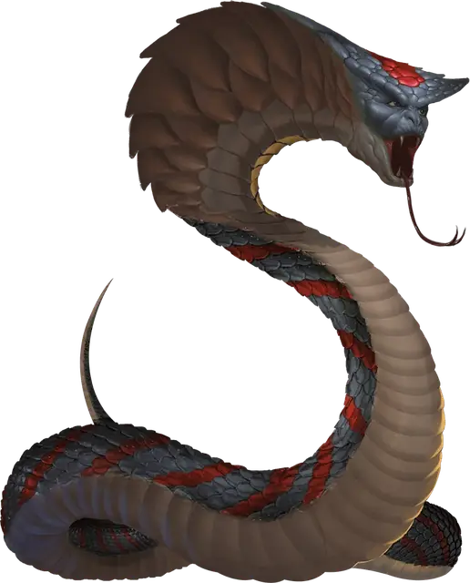

Духовная нага
Spirit Naga
Большой Монстр, хаотично-злой

Класс Доспеха 15 (природный доспех)
Хиты 75 (10к10 + 20)
Скорость 40 футов
| мод | спас | ||
|---|---|---|---|
| СИЛ | 18 | +4 | +4 |
| ЛОВ | 17 | +3 | +6 |
| ТЕЛ | 14 | +2 | +5 |
| мод | спас | ||
|---|---|---|---|
| ИНТ | 16 | +3 | +3 |
| МДР | 15 | +2 | +5 |
| ХАР | 16 | +3 | +6 |
Иммунитет к урону яд
Иммунитет к состояниям очарование, отравление
Чувства тёмное зрение 60 футов, пассивное Восприятие 12
Языки Общий, Бездны
Опасность 8 (3900 опыта)
Бонус мастерства +3
Среда обитания Подземье
Особенности
Восстановление. Если нага умирает, она возвращается к жизни через 1к6 дней и восстанавливает все хиты. Только заклинание исполнение желаний [wish] может прекратить действие этой особенности.
Использование заклинаний. Нага является заклинателем 10-го уровня. Ее базовой характеристикой является Интеллект (Сл спасброска от заклинания 14, +6 к попаданию атаками заклинаниями), и ей для накладывания заклинаний нужны только вербальные компоненты. У неё подготовлены следующие заклинания волшебника:
• Заговоры (неограниченно): волшебная рука [mage hand], луч холода [ray of frost], малая иллюзия [minor illusion];
• 1 уровень (4 ячейки): обнаружение магии [detect magic], очарование личности [charm person], усыпление [sleep];
• 2 уровень (3 ячейки): обнаружение мыслей [detect thoughts], удержание личности [hold person];
• 3 уровень (3 ячейки): молния [lightning bolt], подводное дыхание [water breathing];
• 4 уровень (3 ячейки): переносящая дверь [dimension door], усыхание [blight];
• 5 уровень (2 ячейки):подчинение личности [dominate person].
Действия
Укус. Рукопашная атака оружием: +7 к попаданию, досягаемость 10 футов, одно существо. Попадание: Колющий урон 7 (1к6 + 4), и цель должна совершить спасбросок Телосложения Сл 13, получая урон ядом 31 (7к8) при провале, или половину этого урона при успехе.
Описание
Духовные наги живут в злобе и безрадостности, постоянно планируя месть против тех, кто их предал, — или тех, кто, как они считают, их предал. Они устраивают логова в угрюмых пещерах и руинах, проводя все свое время в изучении новых заклинаний и порабощении смертных, которыми они себя окружают. Духовные наги любят зачаровывать своих врагов, подтягивая их к себе поближе, чтобы можно было впиться ядовитыми клыками в их плоть.
См. дополнительно статью: "Бестиарий: Наги"